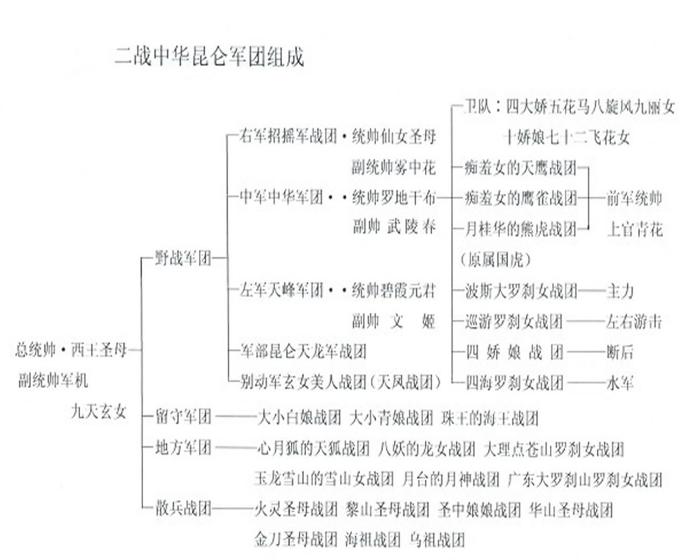

昆仑史曲 第二次天地大戰
十二， 昆仑中华军组织

引渡
隱界的天峰軍舊部，這次是專門負責在地界接迎。
珠王部專門負責接迎三界內的天龍八部眾。
青娘部負責青潭集結後的引渡，白娘部負責斷後護送。
隱界的招搖軍舊部負責長城內外的迎送，送至長江口轉交天鋒部。
昆侖軍負責西域地區的迎送，送至黃河之源和長城之尾交由招搖部。
長城和長江這兩條光帶上都有定期巡航搜索隊，長城帶是青娘戰團和招搖戰團組成的搜索巡邏隊，東段是青娘戰團，西段是招搖戰團。
在長江光帶上，是白娘戰團、天峰戰團。
沿海是珠王戰團。
除定期定點巡邏隊之外，尚有不定期不定點的特別搜索殲擊隊，那是羅刹女戰團。
| 上 一 頁 | 回 主 頁 |